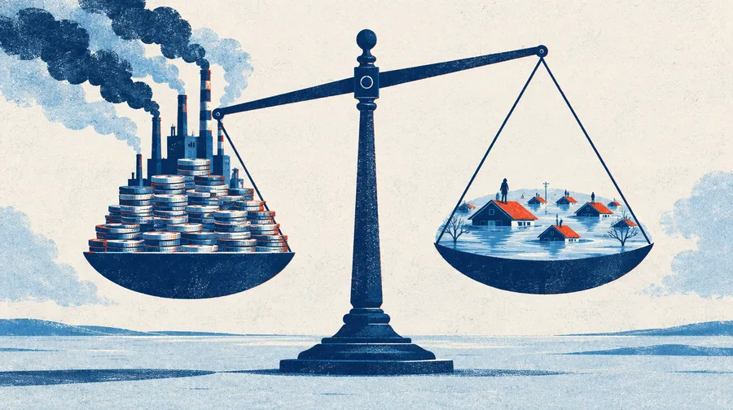
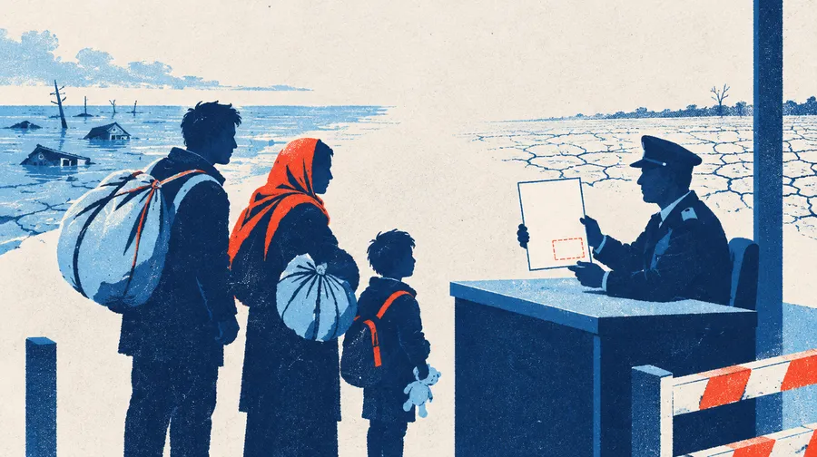
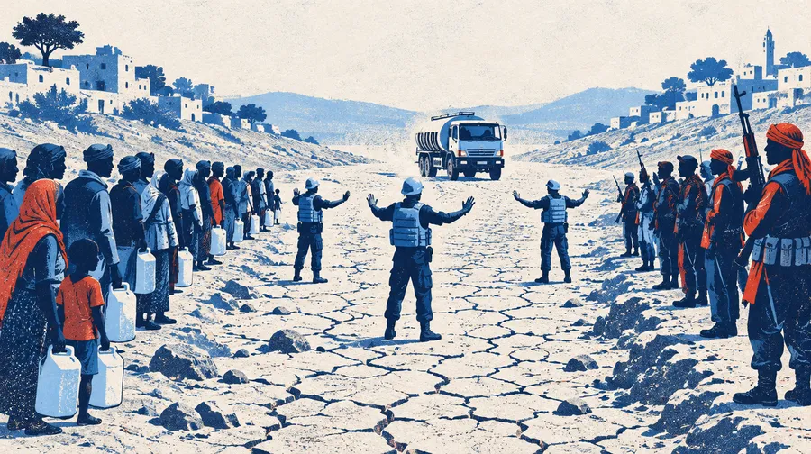

국제관계와 국제기구 · 2차시
모의 UN을 준비합니다
다음 시간, 여러분은 각자 다른 나라와 기구의 대표가 되어 하나의 합의문을 만듭니다.
오늘은 내 나라를 알고, 우리 팀의 작전을 짜고, 첫 발언을 준비합니다.
“우리는 가해자가 아니라 피해자입니다.
그런데 왜 청구서는 우리에게 옵니까?”
— 투발루 대표의 첫 문장
→ 또는 Space 키로 넘깁니다
오늘 50분
회의는 다음 시간. 오늘은 이렇게 준비합니다
| 0~8분 | 안내 — 의제와 역할 |
|---|
| 8~14분 | 선배들의 모의 회담 영상 — 세 장면, 5분 |
|---|
| 14~22분 | 입장, 역할 카드 읽기 — 내 나라가 무엇을 지키려 하는지 |
|---|
| 22~26분 | 퀴즈 — 이 말, 어느 나라 대표가 했을까? |
|---|
| 26~35분 | 팀 회의 — 같은 편끼리 작전을 짜고 결정문을 올립니다 |
|---|
| 35~43분 | 반론 대비와 기조연설 원고 — 누가 나를 공격할까, 나는 뭐라고 답할까 |
|---|
| 43~49분 | 리허설 — 몇 명이 1분 기조연설을 미리 해 봅니다 |
|---|
| 49~50분 | 준비 완료 누르기 |
|---|
의제
기후 위기와 국제 평화·안보
UN 총회 특별세션. 세 가지를 놓고 다툽니다.

A. 손실과 피해 기금
누가 얼마를 내고, 누가 받는가

B. 기후 난민의 법적 지위
난민 협약을 새로 만들 것인가

C. 기후 재난과 평화유지
물·식량 분쟁에 UN이 개입할 것인가
왜 이 의제인가
지난 시간에 배운 것이 그대로 나옵니다
| 거부권 | 강대국이 반대하면 결의는 멈춥니다. 그래도 길이 있는지 찾아야 합니다. |
|---|
| 주권의 벽 | “내정 간섭”이라는 말 앞에서 국제기구는 무엇을 할 수 있습니까. |
|---|
| 재정 | 분담금을 내지 않는 나라가 생기면 활동은 멈춥니다. |
|---|
| 강대국 이탈 | 국제연맹은 그렇게 무너졌습니다. 국제연합은 다릅니까. |
|---|
여러분이 맡은 나라는 이 네 가지 중 하나를 반드시 마주하게 됩니다.
역할
지난 시간 여러분이 조사한 기구에 맞춰 배정했습니다
국가 대표 10명 — 투발루, 미국, 중국, 러시아, 사우디아라비아, 프랑스, 독일, 케냐, 남아프리카공화국, 브라질
표결권이 있습니다. 국익을 지켜야 합니다.
기구·시민사회 4명 — WHO, UNESCO, OHCHR, 국제 NGO 연합
표결권은 없습니다. 대신 증거와 현장의 목소리로 국가들을 움직입니다.
중요 여러분의 의견이 아니라 맡은 나라의 입장을 말합니다. 내 생각과 달라도 그 나라 사람으로 말해야 합니다.
선배들의 모의 회담 · 5분
작년 선배들은 이렇게 했습니다
주제는 북핵과 사드 배치를 둘러싼 6자 회담. 여러분과 의제는 달라도 회의하는 방식은 같습니다.
세 장면만 봅니다. 장면마다 찾을 것 하나를 기억하세요.
| 장면 1 | 기조연설 — 한국 대표의 사드 찬성 연설 | 34:56 ~ 36:20 |
|---|
| 장면 2 | 질의응답 — 북한 대표가 묻고 한국 대표가 답합니다 | 39:35 ~ 41:30 |
|---|
| 장면 3 | 협상 결과 — 반대편 두 그룹이 내놓은 결론 | 1:49:35 ~ 1:51:15 |
|---|
장면 1 · 기조연설 · 34:56 ~ 36:20
찾을 것: 근거를 어떻게 나눠 말했나?
1분 30초가 안 되는 연설입니다. 듣는 사람이 따라오기 쉬웠던 이유를 찾으세요.
“첫째, 안보 / 둘째, 경제 / 셋째, 외교”
입장 한 줄로 시작하고, 근거를 셋으로 나눠 번호를 붙였습니다. 경제 근거에는 실제 사건을 들었습니다. 마지막에 입장을 한 번 더 말하고 끝냈습니다. → 여러분의 네 줄 원고와 같은 뼈대입니다.
찾을 것: 선생님이 중간에 멈추고 고쳐 준 한마디는?
그리고 답하는 쪽이 숫자 하나로 반박하는 순간을 찾으세요.
“○○ 정부에 질문하겠습니다”로 시작하기
누구에게 묻는지 먼저 밝혀야 상대가 알아듣습니다. 답변은 질문을 한 줄로 되짚은 뒤 “1차 핵실험 날 코스피 2.4% 하락”이라는 숫자로 받아쳤습니다. → 다음 시간에는 “의장님, ○○ 대표에게 묻겠습니다”로 시작합니다.
찾을 것: 서로 반대하던 두 그룹이 똑같이 꺼낸 해법은?
한·미·일 그룹과 북·중·러 그룹이 따로 협상하고 돌아와 결과를 발표합니다.
“레이더 탐지 범위를 제한한다”
찬성 쪽은 “항의가 있으면 범위를 공식적으로 제한한다”, 반대 쪽은 “범위를 제한하고 국경에서 먼 곳에 둔다면 조건부로 받아들인다”. 양쪽 모두 전부 이기기 대신 조건을 걸었습니다. → 오늘 쓸 팀 결정문의 양보선이 바로 이것입니다.
채팅에 쓰기 — 선배들한테서 훔칠 것 하나. 예) “근거에 번호 붙이기”
지금 접속 · 8분
created412.github.io/un-recruit/mun.html
- 학번, 이름을 쓰고 선생님이 알려 준 역할을 골라 입장하기
- 내 역할 탭에서 카드를 끝까지 읽기 — 사실 3개, 협상 카드, 의제별 입장
- 시간이 남으면 입장 화면의 14개 역할 카드 모두 보기로 다른 나라도 훑어보기 — 바로 다음이 퀴즈입니다
역할은 선생님이 채팅으로 알려 줍니다. 학번과 이름은 정확하게 쓰세요.
퀴즈 · 4분
이 말, 누가 했을까?
역할 카드에 실린 실제 입장 문장입니다. 어느 나라(기구) 대표의 말인지 미트 채팅에 쓰세요.
가장 먼저 맞힌 사람이 아니라, 왜 그 나라인지 이유를 함께 쓴 사람이 이깁니다.
예) “브라질 — ‘숲 보존에도 대가를’이라고 하는 건 아마존이 있는 나라니까”
다음 시간, 이 사람들이 여러분의 상대이자 동맹입니다.
팀 회의
이해관계가 가까운 역할끼리 다섯 팀입니다
같은 팀이어도 입장이 조금씩 다릅니다. 그 차이를 맞추는 것이 오늘 할 일입니다.
팀 회의 · 9분
회의 화면 「팀 회의」 탭에서 작전을 짭니다
팀 대화에 짧게 주고받고, 아래 네 칸을 채운 팀 결정문을 올립니다.
- 우선 의제 — A·B·C 중 어디에 힘을 쏟을까
- 공동 요구 — 합의문에 꼭 넣을 한 문장
- 양보선 — “~를 보장하면 ~는 받아들인다”
- 상대와 대응 — 누가 막을까, 어떻게 맞설까
이렇게 시작하세요
첫 메시지는 “우리 팀은 어느 의제에 힘을 쏟을까?”
결정문은 누가?
학번이 가장 빠른 사람이 올립니다. 누가 다시 올리면 새것으로 바뀝니다.
반론 대비
나를 가장 세게 공격할 대표는 누구일까?
「기조연설 준비」 탭에서 세 칸을 채웁니다. 상대를 고르면 그 나라의 입장이 바로 보입니다.
| 상대 | 미국 대표 |
|---|
| 예상 공격 | “의무 분담금은 받아들일 수 없다. 자발적 기여로 충분하다.” |
|---|
| 내 대답 | “자발적 기여는 30년 동안 약속만 반복했습니다. 투발루는 세계 배출의 0.001%도 내지 않았는데 국토를 잃고 있습니다.” |
|---|
이 내 대답이 다음 시간 자유 토론의 45초 발언이 됩니다.
1분 기조연설 · 반론 대비와 8분
이 네 줄이면 1분입니다
- 인사와 입장 — “의장님, ○○ 대표단입니다. 우리는 이 의제를 ~로 봅니다.”
- 근거 하나 — 역할 카드의 사실 중 하나를 숫자와 함께
- 요구 하나 — 팀 결정문의 공동 요구를 내 나라 말로
- 협상 여지 — “~를 보장한다면 우리는 ~를 수용할 수 있습니다.”
300자 안팎. 자동 저장되고, 다음 시간에 보면서 읽어도 됩니다.
발언하는 법
말은 이렇게 시작합니다
“의장님, 케냐 대표단입니다.”
- 다른 나라는 이름이 아니라 “미국 대표”처럼 역할로 부릅니다.
- 끼어들지 않습니다. 반박은 내 차례에 합니다.
- “저는 ~라고 생각합니다”가 아니라 “우리 정부는 ~를 요구합니다”로 말합니다.
- 45초는 생각보다 짧습니다. 주장 하나, 근거 하나면 충분합니다.
이런 발언은 점수가 되지 않습니다
“저도 같은 생각입니다” / “잘 모르겠습니다” / 자료를 그대로 읽기만 하는 발언
구글 미트에서 지킬 것
마이크는 본인이 켭니다
선생님은 여러분의 마이크를 대신 켤 수 없습니다. 호명되면 직접 켜고, 끝나면 바로 끕니다.
내 차례
마이크 켜기 → “의장님,”으로 시작 → 끝나면 끄기
지금 리허설에서 한 번 해 봅니다.
리허설 · 6분
1분 기조연설, 미리 해 봅니다
두세 명이 해 봅니다. 듣는 사람은 네 줄 중 빠진 것이 있으면 채팅에 번호를 씁니다.
- 인사와 입장이 있었나
- 숫자가 들어간 근거가 있었나
- 구체적인 요구가 있었나
- 협상 여지를 남겼나
다음 시간 · 회의 흐름
50분을 이렇게 씁니다
| 3~16분 | 기조연설 1분씩 — 전원이 한 번씩 합니다. 신청하지 않아도 의장이 부릅니다. |
|---|
| 16~33분 | 자유 토론 45초 — 말하고 싶으면 화면에서 발언을 신청합니다. 오늘 쓴 반론 대비를 꺼내 쓰세요. |
|---|
| 33~39분 | 블록 협상 — 오늘 올린 팀 결정문에서 출발해 공동 제안을 만듭니다. |
|---|
| 39~46분 | 표결 — 국가 대표만 표결합니다. |
|---|
한 사람당 최소 두 번 발언합니다. 기조연설 한 번, 토론 한 번 이상.
평가
점수는 네 가지로 봅니다
- 국가 입장의 정확성 — 내 나라가 실제로 할 법한 말을 했는가
- 기조연설의 논리 — 주장에 근거가 붙어 있는가
- 협상 기여 — 수정안이나 타협안을 냈는가
- 역할 충실도 — 끝까지 그 나라 사람으로 말했는가
오늘 쓴 팀 결정문, 반론 대비, 원고도 기록됩니다. 많이 말한 사람이 아니라 근거를 댄 사람이 좋은 점수를 받습니다.
마무리
다섯 가지를 마치고 ‘준비를 마쳤습니다’를 누르세요
- 내 역할 카드 끝까지 읽기
- 팀 결정문 올리기 (팀에서 한 명)
- 반론 대비 저장
- 기조연설 원고 300자 안팎
- 회의장 탭에서 발언 신청 눌러 보고 취소하기
다음 시간에는 같은 기기, 같은 학번으로 들어오면 오늘 쓴 것이 그대로 있습니다.
화살표 키로 넘김 · 인쇄하면 유인물이 됩니다